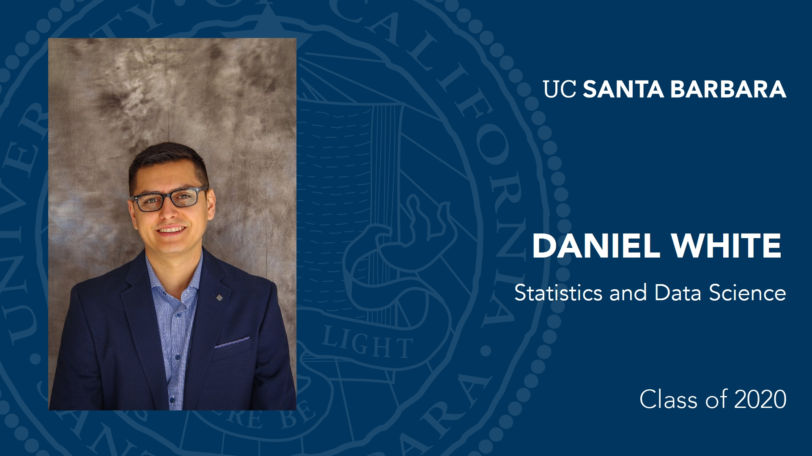

My name is Daniel White and I was born & raised in the beautiful city of Oceanside, CA. I enjoy problem solving and learning different programming techniques. I recently graduated from UC Santa Barbara with a Bachelor of Science degree in Statistics and Data Science. During my time at the university, I learned the basics of programming and enjoyed those classes so much that I immediately saw myself growing a career out of software development. I am currently enrolled in a frontend software development program at Promineo Tech while working as a web development intern for an insurance agency. When I am not working on a new program or working, I am either playing beach volleyball with friends, hiking, or going on jogs along the Santa Barabara Waterfront.
